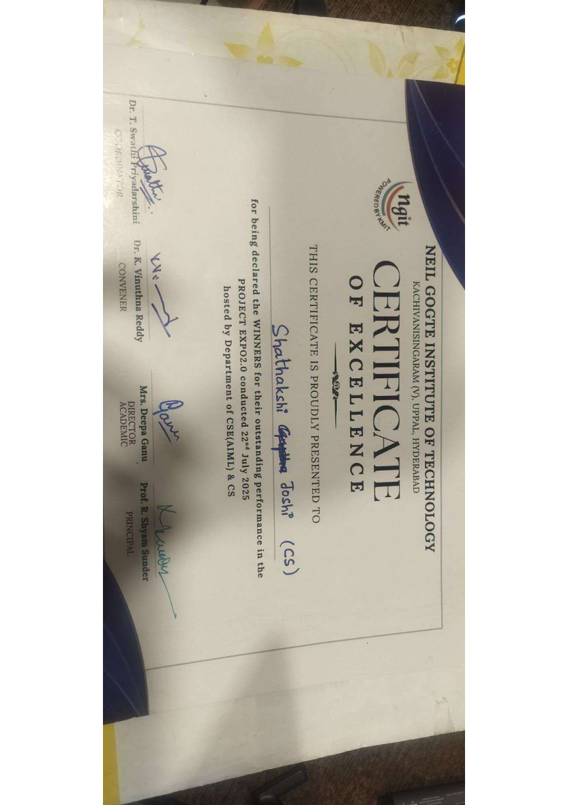
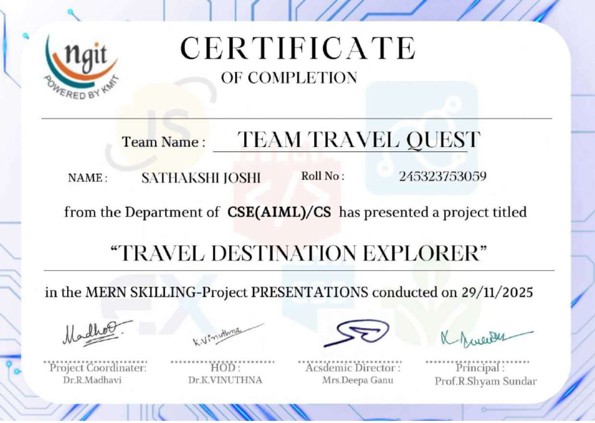
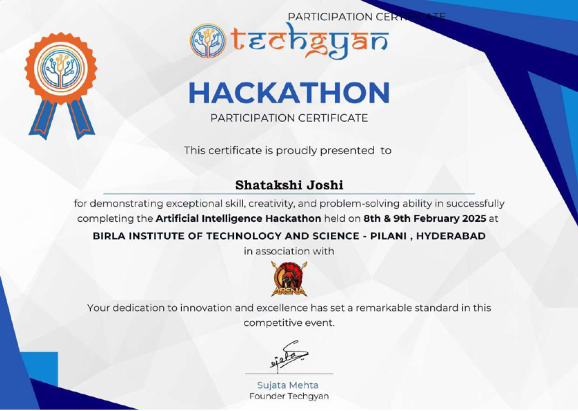

Multi-service CI/CD pipeline
Jenkins builds and publishes Docker images for four microservices. Docker Swarm handles replicated services, with rolling updates and Nginx load balancing.
I’m Shatakshi Joshi, a Computer Science undergraduate at Neil Gogte Institute of Technology, with a growing focus on DevOps and cloud engineering.
I enjoy connecting application development with the systems that keep it running. My work spans Java, backend development, containerization, CI/CD pipelines, and AWS infrastructure. Through projects and my internship, I’m turning that foundation into practical engineering experience.
Java · C · Node.js · Express.js · REST APIs
AWS · Linux · Docker · Jenkins · GitHub Actions · Ansible · Terraform · SonarQube · Nexus
Data structures & algorithms · OOP · DBMS · SQL · MongoDB
Jenkins builds and publishes Docker images for four microservices. Docker Swarm handles replicated services, with rolling updates and Nginx load balancing.
A LAMP deployment on AWS using an Application Load Balancer, Auto Scaling, and RDS, including a MySQL Blue/Green engine upgrade.
Maven builds, SonarQube analysis, and dependency caching, with an EC2 runner and automated WAR deployment to Tomcat.
DEXAMINDS
September 2026 – Present
Student Intern ProgramHands-on exposure to cloud infrastructure, deployment processes, and DevOps automation.
MICROSOFT LEARN
Learning achievement · 6,800 XP
View achievementMICROSOFT LEARN
Learning achievement
View achievementTHE LINUX FOUNDATION
Credential ID: LF-mazkhz7zpg
Certificate copy to be addedAWS SKILL BUILDER
Completed learning · Course resource
View courseNational-level AI & DS Hackathon

Certificate of excellence
View certificate
MERN skilling · Travel Destination Explorer
View certificate
BITS Pilani, Hyderabad
View certificateSt. Ann’s High School
St. Ann’s High School
Neil Gogte Institute of Technology